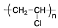
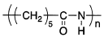
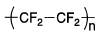
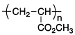
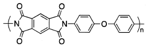
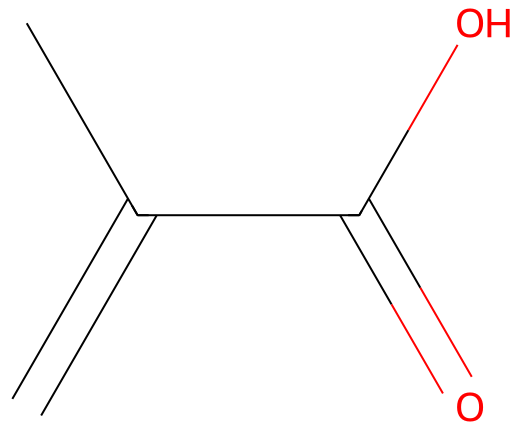

令和5年度 問18 高分子化学
次の高分子材料の構造のうち、誤っているものはどれか。
①
ポリ塩化ビニル

②
ナイロン－6

③
ポリフッ化ビニリデン

④
ポリアクリル酸メチル

⑤
ポリイミド

正答
③ ポリフッ化ビニリデン
正答は3番です。
ポリフッ化ビニリデン（PVDF）の構造は-(CF2-CH2)n-です。ビニル化合物の一部の水素原子がフッ素原子に置き換わっています。耐熱性や耐薬品性を向上させつつも加工性があるフッ素樹脂です。問で示された分子は全てFに置き換わっており、ポリテトラフルオロエチレン（PTFE）と呼ばれます。PTFEはフッ素樹脂の中で代表的でありPVDFよりも耐熱性や耐薬品性に優れます。
1番のポリ塩化ビニルも似た考え方で、塩素原子の結合が一つ増えた-(CCl2-CH2)n-となることでラップの原料であるポリ塩化ビニリデンとなります。
2番のナイロンは末尾の数字によって繰り返し単位の炭素数が分かります。この際カルボニル炭素も1つとして数えます。
4番のポリアクリル酸メチルは似た名称が多く分かりづらいのが特徴です。ベースはアクリル酸です。アクリル酸のメチルエステルが問いにもあるアクリル酸メチルです。似た分子として、二重結合の片側にメチル基もついたメタクリル酸メチルがあります。同様に、メチルエステルであるメタクリル酸メチル（PMMA）もあります。
PMMAは水槽などに使われる所謂アクリルです。


5番のポリイミドは、窒素原子にカルボニル基が2つ結合したイミド（-CO-NR-CO-）結合を含む高分子化合物の総称です。 非常に高い機械強度、優れた耐熱性、電気絶縁性があることからフレキシブルプリント基板として用いられます。